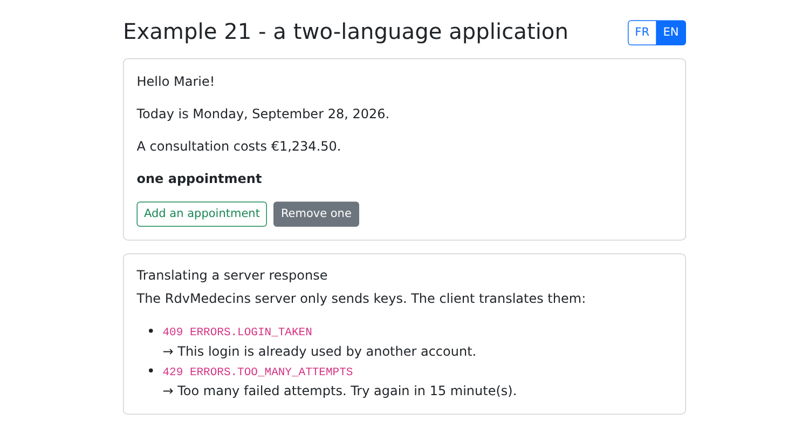

6. Internacionalização
6.1. Exemplo 21: uma aplicação bilíngue
A aplicação [RdvMedecins] está disponível em francês e em inglês. No curso de [NestJS], o servidor traduzia as páginas antes de enviá-las. Agora as páginas são geradas no navegador: o cliente as traduz, e a troca de idioma não exige mais nenhuma interação com o servidor.
O [Angular] tem seu próprio sistema de tradução, [@angular/localize], que gera uma aplicação compilada para cada idioma: trocar de idioma consiste, portanto, simplesmente em carregar outra aplicação. Em vez disso, usaremos a biblioteca [ngx-translate], a mais utilizada junto com o [Angular], que traduz em tempo de execução: basta um clique para retraduzir a página inteira.
| 21-i18n/src/app/
├── i18n/
│ ├── fr.json the French dictionary
│ ├── en.json the English dictionary
│ ├── i18n.ts the configuration of ngx-translate
│ └── plural.pipe.ts the choice of the plural
├── app.ts
└── app.html
|
A biblioteca é declarada no arquivo [package.json] do workspace:
| "@ngx-translate/core": "^18.0.0",
|
6.1.1. Dicionários
| {
"APP": {
"TITLE": "Exemple 21 - une application en deux langues",
"LANGUAGE": "Langue"
},
"HOME": {
"HELLO": "Bonjour {{name}} !",
"TODAY": "Nous sommes le {{date}}.",
"PRICE": "Une consultation coûte {{price}}.",
"APPOINTMENTS": {
"zero": "aucun rendez-vous",
"one": "un rendez-vous",
"other": "{{n}} rendez-vous"
},
"ADD": "Ajouter un rendez-vous",
"REMOVE": "En retirer un"
},
"ERRORS": {
"LOGIN_TAKEN": "Ce login est déjà utilisé par un autre compte.",
"TOO_MANY_ATTEMPTS": "Trop de tentatives infructueuses. Réessayez dans {{minutes}} minute(s)."
},
"SERVER": {
"TITLE": "Traduire une réponse du serveur",
"EXPLANATION": "Le serveur RdvMedecins ne renvoie que des clés. C'est le client qui les traduit :"
}
}
|
| {
"APP": {
"TITLE": "Example 21 - a two-language application",
"LANGUAGE": "Language"
},
"HOME": {
"HELLO": "Hello {{name}}!",
"TODAY": "Today is {{date}}.",
"PRICE": "A consultation costs {{price}}.",
"APPOINTMENTS": {
"zero": "no appointment",
"one": "one appointment",
"other": "{{n}} appointments"
},
"ADD": "Add an appointment",
"REMOVE": "Remove one"
},
"ERRORS": {
"LOGIN_TAKEN": "This login is already used by another account.",
"TOO_MANY_ATTEMPTS": "Too many failed attempts. Try again in {{minutes}} minute(s)."
},
"SERVER": {
"TITLE": "Translating a server response",
"EXPLANATION": "The RdvMedecins server only sends keys. The client translates them:"
}
}
|
- Cada texto tem uma chave formada pelos nomes dos níveis sucessivos: [HOME.HELLO], [ERRORS.LOGIN_TAKEN]... O código e os templates não contêm mais nenhum texto, apenas chaves;
- linha 7: os parâmetros são escritos entre chaves duplas: [{{name}}];
- linhas 10–14: formas plurais, agrupadas sob a mesma chave (veja abaixo);
- linhas 18–21: as chaves [ERRORS.*] são as retornadas pelo servidor [RdvMedecins] em suas respostas de erro (próximo capítulo). O servidor não retorna texto, mas uma chave; o cliente a traduz para o idioma do usuário.
6.1.2. A configuração
| // =========================================================================
// 21-i18n/src/app/i18n/i18n.ts - a configuração do ngx-translate
// -------------------------------------------------------------------------
// ngx-translate é a biblioteca de tradução mais usada com
// o Angular. Nós a configuramos com:
// - um DICIONÁRIO por idioma (fr.json, en.json), em que cada texto tem uma
// CHAVE ("HOME.HELLO"); os parâmetros são escritos {{name}};
// - um LOADER (TranslateLoader), que retorna o dicionário de um
// idioma. O nosso os obtém do código da aplicação (importação de
// arquivos JSON); outro poderia baixá-los;
// - o idioma inicial (o armazenado no localStorage, senão o
// do navegador, senão inglês) e o idioma de fallback.
// Nos templates, {{ 'HOME.HELLO' | translate: { name: 'Marie' } }}
// exibe o texto do idioma ATUAL; trocar o idioma atualiza
// a página inteira.
//
// É, no lado do cliente, o mesmo princípio do curso de NestJS (dicionários
// i18n/*.json + helper {{t}}) - mas a tradução agora é feita no
// navegador, e trocar o idioma não exige mais nada do servidor.
//
// (O Angular também tem seu próprio sistema, @angular/localize, que gera UMA
// aplicação compilada por idioma: o idioma só pode então ser trocado
// mudando de página. O ngx-translate, por sua vez, traduz em tempo de execução.)
// =========================================================================
import { Provider } from '@angular/core';
import { provideTranslateLoader, provideTranslateService, TranslateLoader, TranslationObject } from '@ngx-translate/core';
import { Observable, of } from 'rxjs';
import fr from './fr.json';
import en from './en.json';
export type Language = 'fr' | 'en';
export const LANGUAGES: Language[] = ['fr', 'en'];
export const LANGUAGE_KEY = 'example21.language';
// o loader dos dicionários
class DictionariesLoader implements TranslateLoader {
getTranslation(language: string): Observable<TranslationObject> {
return of(language === 'en' ? en : fr);
}
}
function initialLanguage(): Language {
const stored = localStorage.getItem(LANGUAGE_KEY);
if (stored === 'fr' || stored === 'en') {
return stored;
}
return navigator.language.startsWith('fr') ? 'fr' : 'en';
}
export function provideI18n(): Provider[] {
return provideTranslateService({
loader: provideTranslateLoader(DictionariesLoader),
fallbackLang: 'en', // uma chave ausente em francês: usa-se a em inglês
lang: initialLanguage(),
});
}
|
- Linhas 29–30: os dicionários são importados como módulos; eles fazem parte do código da aplicação. Isso é possível graças à opção [resolveJsonModule] no arquivo [tsconfig.json];
- linha 34: a chave sob a qual o idioma selecionado é armazenado no [localStorage] (exemplo 20);
- linhas 37–41: o loader de dicionários: o [ngx-translate] o chama para obter o dicionário de um idioma na forma de um observable. O nosso os obtém do código; outro poderia baixá-los do servidor;
- linhas 43–49: o idioma de origem: o último selecionado pelo usuário, caso contrário francês se o idioma do navegador for o francês, caso contrário inglês;
- linhas 51–57: [provideTranslateService] disponibiliza os serviços do [ngx-translate] em toda a aplicação. [fallbackLang]: o idioma usado para uma chave ausente do dicionário atual.
| // =========================================================================
// 21-i18n/src/main.ts
// -------------------------------------------------------------------------
// provideI18n(): ngx-translate (veja app/i18n/i18n.ts).
// registerLocaleData(localeFr): as regras francesas dos pipes de data,
// moeda... (o inglês está sempre disponível).
// =========================================================================
import { registerLocaleData } from '@angular/common';
import localeFr from '@angular/common/locales/fr';
import { bootstrapApplication } from '@angular/platform-browser';
import { App } from './app/app';
import { provideI18n } from './app/i18n/i18n';
registerLocaleData(localeFr);
bootstrapApplication(App, { providers: [provideI18n()] }).catch((error) => console.error(error));
|
- linha 15: os pipes [date] e [currency] (exemplo 09) conhecem as regras do inglês; as do francês precisam ser registradas;
- linha 17: os serviços do [ngx-translate] são adicionados à aplicação.
6.1.3. Plurais
O [ngx-translate] não oferece suporte a plurais. Um pequeno pipe seleciona a forma correta:
| // =========================================================================
// 21-i18n/src/app/i18n/plural.pipe.ts - escolhendo a forma do plural
// -------------------------------------------------------------------------
// O ngx-translate não trata plurais. O dicionário fornece as
// formas sob uma mesma chave ("APPOINTMENTS": { "zero", "one", "other" }) e
// este pipe escolhe a correta, conforme o número e o idioma:
// {{ 'HOME.APPOINTMENTS' | plural: n : language | translate: { n } }}
// Intl.PluralRules conhece as regras de cada idioma ("one" ou "other" em
// inglês como em francês, mas outras formas em polonês, em árabe...).
// =========================================================================
import { Pipe, PipeTransform } from '@angular/core';
@Pipe({ name: 'plural' })
export class PluralPipe implements PipeTransform {
transform(key: string, n: number, language: string | null): string {
if (n === 0) {
return `${key}.zero`;
}
return `${key}.${new Intl.PluralRules(language ?? 'en').select(n)}`;
}
}
|
- Linhas 16–21: o pipe recebe uma chave ([HOME.APPOINTMENTS]), um número e um idioma; ele retorna a chave na forma correta ([HOME.APPOINTMENTS.one], por exemplo);
- Linha 18: o zero tem seu próprio formato (“no appointment”);
- linha 20: [Intl.PluralRules], fornecido pelo navegador, segue as regras de cada idioma: [one] ou [other] em francês e em inglês, mas outras formas em polonês ou árabe. (Observação: em francês, 1,5 é singular; em inglês, é plural.)
6.1.4. A página traduzida
| // =========================================================================
// 21-i18n/src/app/app.ts - uma página traduzida
// -------------------------------------------------------------------------
// - 'KEY' | translate um texto;
// - 'KEY' | translate: { name: ... } um texto com parâmetros;
// - date / currency com o idioma uma data, um valor, no formato
// do idioma atual;
// - translate.use('fr') troca o idioma: a página
// inteira é traduzida de novo.
// TranslateService.currentLang é um SIGNAL: o idioma atual.
// =========================================================================
import { Component, effect, inject, signal } from '@angular/core';
import { CurrencyPipe, DatePipe } from '@angular/common';
import { TranslatePipe, TranslateService } from '@ngx-translate/core';
import { LANGUAGE_KEY, Language, LANGUAGES } from './i18n/i18n';
import { PluralPipe } from './i18n/plural.pipe';
@Component({
selector: 'app-root',
imports: [CurrencyPipe, DatePipe, TranslatePipe, PluralPipe],
templateUrl: './app.html',
})
export class App {
private readonly translate = inject(TranslateService);
protected readonly language = this.translate.currentLang;
protected readonly languages = LANGUAGES;
protected readonly count = signal(2);
protected readonly today = new Date();
// o que o servidor RdvMedecins retornaria (veja o capítulo sobre a caixa-preta)
protected readonly serverResponses = [
{ statusCode: 409, key: 'ERRORS.LOGIN_TAKEN', params: {} },
{ statusCode: 429, key: 'ERRORS.TOO_MANY_ATTEMPTS', params: { minutes: '15' } },
];
// translate.translate(key): um SIGNAL que acompanha o idioma atual
private readonly title = this.translate.translate('APP.TITLE');
constructor() {
// a cada troca de idioma: nós o armazenamos e atualizamos
// o atributo lang da página (útil para leitores de tela, corretores ortográficos)
effect(() => {
const language = this.language();
if (language) {
localStorage.setItem(LANGUAGE_KEY, language);
document.documentElement.lang = language;
}
document.title = String(this.title());
});
}
protected choose(language: Language): void {
this.translate.use(language);
}
}
|
- linha 21: [TranslatePipe]: o pipe [translate];
- linha 25: [TranslateService]: o serviço principal do [ngx-translate];
- linha 26: [currentLang]: o idioma atual, como um signal;
- linhas 32–35: duas respostas de erro, como o servidor as retornaria: uma chave e parâmetros;
- linha 38: [translate.translate(key)] retorna um signal igual à tradução da chave, que acompanha o idioma atual;
- linhas 43–50: uma ação executada sempre que o idioma muda: o idioma é armazenado (linha 46), o atributo [lang] da página é atualizado (linha 47; ele é usado por leitores de tela e corretores ortográficos), assim como o título da aba (linha 49);
- linha 54: [use] altera o idioma atual: a página inteira é retraduzida.
| <div class="container py-4" style="max-width: 720px">
<div class="d-flex justify-content-between align-items-center mb-3">
<h1 class="h3 mb-0">{{ 'APP.TITLE' | translate }}</h1>
<div class="btn-group btn-group-sm" role="group" [attr.aria-label]="'APP.LANGUAGE' | translate">
@for (l of languages; track l) {
<button class="btn" [class]="language() === l ? 'btn-primary' : 'btn-outline-primary'" (click)="choose(l)">
{{ l.toUpperCase() }}
</button>
}
</div>
</div>
<div class="card p-3 mb-3">
<p>{{ 'HOME.HELLO' | translate: { name: 'Marie' } }}</p>
<!-- um parâmetro calculado por outro pipe, no idioma atual -->
<p>{{ 'HOME.TODAY' | translate: { date: (today | date: 'fullDate' : '' : language() ?? 'en') } }}</p>
<p>{{ 'HOME.PRICE' | translate: { price: (1234.5 | currency: 'EUR' : 'symbol' : '1.2-2' : language() ?? 'en') } }}</p>
<!-- plural escolhe a chave (zero, one, other), translate a traduz -->
<p class="fw-bold">{{ 'HOME.APPOINTMENTS' | plural: count() : language() | translate: { n: count() } }}</p>
<div class="d-flex gap-2">
<button class="btn btn-sm btn-outline-success" (click)="count.set(count() + 1)">{{ 'HOME.ADD' | translate }}</button>
<button class="btn btn-sm btn-outline-secondary" [disabled]="count() === 0" (click)="count.set(count() - 1)">
{{ 'HOME.REMOVE' | translate }}
</button>
</div>
</div>
<div class="card p-3">
<h2 class="h6">{{ 'SERVER.TITLE' | translate }}</h2>
<p>{{ 'SERVER.EXPLANATION' | translate }}</p>
<ul class="mb-0">
@for (r of serverResponses; track r.key) {
<!-- a chave do servidor É uma chave do dicionário; params fornece seus parâmetros -->
<li><code>{{ r.statusCode }} {{ r.key }}</code><br>→ {{ r.key | translate: r.params }}</li>
}
</ul>
</div>
</div>
|
- linha 3: ['APP.TITLE' | translate]: a tradução da chave no idioma atual;
- linha 6: o botão do idioma atual é destacado;
- linha 14: um texto parametrizado: o pipe recebe um objeto que fornece o valor de cada parâmetro;
- linhas 16–17: o valor de um parâmetro pode ser calculado por outro pipe. O último argumento de [date] e [currency] é o idioma: a data e o valor são escritos no estilo francês ou inglês;
- linha 19: dois pipes encadeados: [plural] seleciona a chave, e [translate] a traduz;
- linha 34: a chave retornada pelo servidor é traduzida, junto com seus parâmetros.
[npm start 21-i18n]; com um navegador configurado em francês, a página fica em francês:

Clique em [EN]e depois em “Remove one”:

Recarregue a página: ela permanece em inglês; o idioma foi salvo.